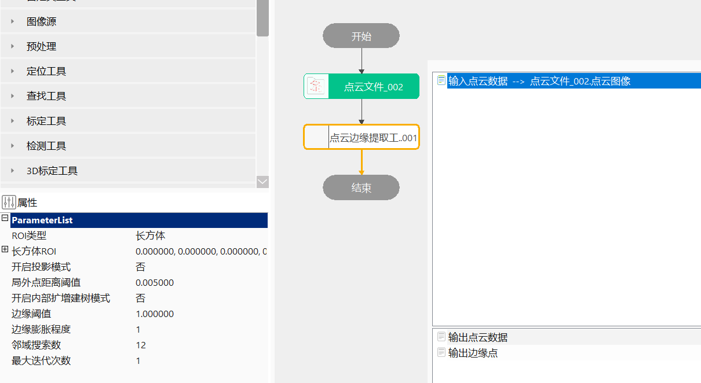
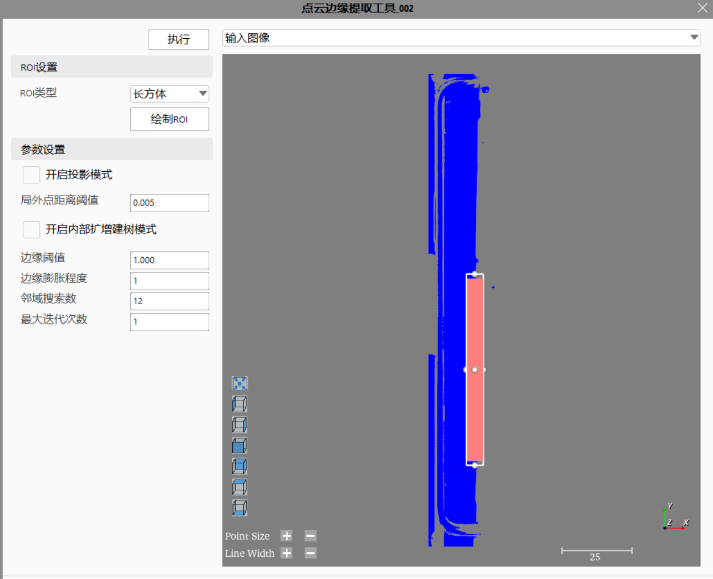
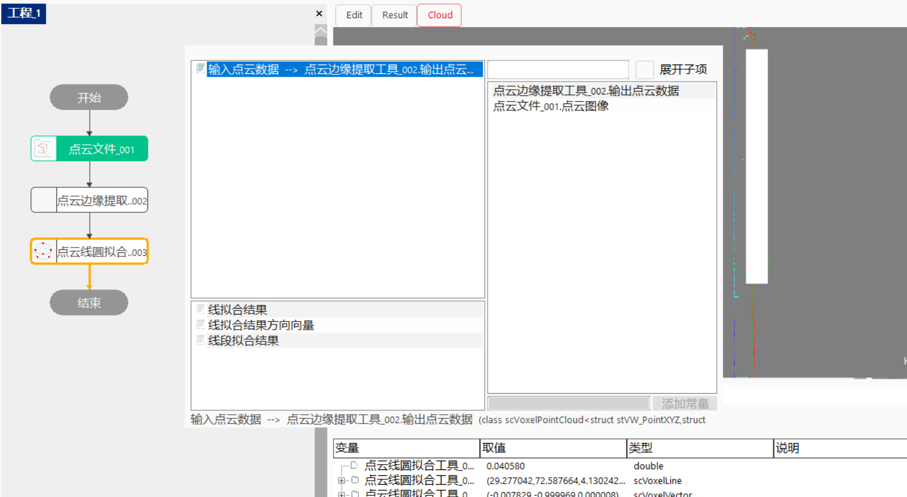

Công cụ trích xuất biên đám mây điểm thực hiện trích xuất biên trên đám mây điểm đầu vào, sử dụng dữ liệu biên đám mây điểm đã trích xuất để thực hiện các hạng mục kiểm tra hoặc đo lường như phát hiện biên hoặc fitting đường thẳng/đường tròn.
Trong đo lường 3D, trích xuất biên đám mây điểm được ứng dụng khá rộng rãi, ví dụ trong đo lường khung giữa điện thoại cần thực hiện trích xuất biên đám mây điểm trước, sau đó mới thực hiện các hạng mục đo lường tiếp theo như fitting đường thẳng.
step1：Thêm file đám mây điểm, công cụ trích xuất biên đám mây điểm, sau đó nhấp đúp để mở chuỗi tham số công cụ, liên kết file đám mây điểm, như trong Hình 3-1；
step2：Nhấp chuột phải vào công cụ trích xuất biên đám mây điểm, nhấp “Thuộc tính” để mở giao diện nâng cao của công cụ, như trong Hình 3-2, chọn loại ROI là hình hộp chữ nhật, thiết lập tham số trích xuất biên, sau đó nhấp chạy để nhận được dữ liệu đám mây điểm sau khi trích xuất；
step3：Như trong Hình 3-3, sau khi trích xuất đám mây điểm, có thể xuất dữ liệu đám mây điểm đầu ra hoặc tập điểm đầu ra sang công cụ fitting đường thẳng/đường tròn đám mây điểm ở bước sau；



| Tên tham số | Mô tả tham số |
|---|---|
| Dữ liệu đám mây điểm đầu vào | Nhập ảnh đám mây điểm cần trích xuất |
| Mặt phẳng chiếu đầu vào | Khi bật chế độ chiếu chọn “Có”, tham số này có hiệu lực |
| Tên tham số | Mô tả tham số |
|---|---|
| Loại ROI | Chia thành hai loại: hình hộp chữ nhật và hình cầu |
| Bật chế độ chiếu | Có: bật chế độ chiếu；Không: không bật chế độ chiếu |
| Ngưỡng khoảng cách điểm ngoại lai | Phạm vi thiết lập：[0.0001, 1]，giá trị mặc định 0.005 |
| Bật chế độ tăng cường nội bộ để dựng cây | Sau khi bật, sẽ tăng cường các điểm dùng để dựng cây |
| Ngưỡng biên | Phạm vi thiết lập：[-10.0, 10.0]，mặc định là 1 |
| Mức độ giãn nở biên | Phạm vi thiết lập：[1, 50]，mặc định là 1，chú ý：tham số này phải nhỏ hơn số lượng tìm kiếm lân cận |
| Số lượng tìm kiếm lân cận | Phạm vi thiết lập：[1, 200]，mặc định là 12 |
| Số lần lặp tối đa | Phạm vi thiết lập：[1, 100]，mặc định là 1 |
| Xuất điểm biên sau khi chiếu | Khi bật chế độ chiếu chọn “Có”, tham số này có hiệu lực. Có: xuất các điểm trên đám mây điểm nguồn；Không: xuất các điểm sau khi chiếu |
| Loại bỏ các điểm trùng lặp của đám mây điểm | Có: tự động loại bỏ các điểm trùng lặp của đám mây điểm, thời gian xử lý sẽ tăng；Không: không xử lý；đối với ảnh đám mây điểm thông thường khuyến nghị không bật, đối với ảnh đám mây điểm có nhiều điểm trùng lặp khuyến nghị bật |
Tham số giao diện nâng cao nhất quán với tham số cửa sổ thuộc tính, các nút tương tác như sau：
| Tên nút | Mô tả tham số |
|---|---|
| Bắt đầu vẽ | Trong ảnh của giao diện nâng cao, nhấp và kéo chuột tại vị trí tương ứng để vẽ ROI hình hộp chữ nhật |
| Tên tham số | Mô tả tham số |
|---|---|
| Dữ liệu đám mây điểm đầu ra | Xuất dữ liệu đám mây điểm đã trích xuất biên |
| Điểm biên đầu ra | Xuất tập điểm đã trích xuất biên |
| Tên tham số | Mô tả tham số |
|---|---|
| Dữ liệu đám mây điểm đầu ra | Xuất dữ liệu đám mây điểm đã trích xuất biên |
| Điểm biên đầu ra | Xuất tập điểm đã trích xuất biên |
| Thời gian thực thi | Thời gian thực thi công cụ |
| Kết quả thực thi | Kết quả thực thi công cụ |
Tham khảo “\Samples\3D\点云\点云边缘提取工具.gvp”.